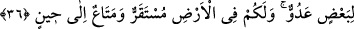

günahtan tevbe ederek temizlenmesini ve sevgisine lâyık olmasını sağlamıştır. Çünkü
Allah, Kur’ân’da tevbe edenleri ve temizlenenleri sevdiğini (el-Bakara, 2/222) haber
vermektedir.
Unutarak yasağı çiğneyen Âdem (a.s.)’a Allah Teâlâ tevbe etmeyi nasîb etmiş ve bu
pişmanlıktan muhabbet hâsıl olmuştur. Muhabbet sâyesinde de onun temizlenmesine
imkân sağlamıştır. Nitekim bir hadîsde; “Allah bir kulu severse ona günah zarar
vermez”[245] buyrulmuştur. Yâni Allah, o kula pişmanlığı ve tevbeyi nasîb eder.
İşlenilen hatâ dolayısıyla insanın derecesi artıyorsa buna “tenzîhî zelle” denir. Âdem
(a.s.)’ın yaptığı hatâdan dolayı itâba uğraması, iyilerin hasenâtı, mukarreblerin seyyiâtı
kabilindendir.
Celvetiyye tarîkatının pîri Hüdâyî (k.s.): “Allah’ın kullarını cennete çağırmasını
şöyle tevil etmiştir. Âyetteki cennet Âdem’in vücûdundaki ruhdur. Âdem kalb, eşi
Havvâ ise nefstir. Sanki Allah Teâlâ, kalb Âdemiyle nefs Havvâ’sının itâat ve ibâdetle
rûh cennetine yükselmelerini istemektedir. Allah’ın onlara yemesini emrettiği şey
mârifettir. Çünkü kalb makamı, mârifet makamıdır. Âyetin: “Dilediğiniz her yerde”
kısmından anlaşılan hayırlı ve sâlih amellerden istenilenlerin nâfile olarak yapılmasıdır.
Allah Teâlâ’nın yasakladığı ağaç ise “emre muhâlefet” ağacıdır. Bu yasak, sadece Âdem
ve Havvâ için değil, bütün kullara şâmildir. Kul, ibâdet ve tâatla Allah’a yaklaşmaya
çalışmalı, insanı helâk eden dînî emirlere muhâlefetten kaçınmalıdır. Nitekim
Mesnevî’de şöyle gelmiştir:
İbâdet ve tâatın acı ilâcını iç,
Ta ki sabır içinde kerem güneşi olasın.
Gayret et ki nûr, sende parlasın
Böylece sana sülûk ve hizmet kolay gelsin
Kalb aynan da temizlenip parlasın.
Tâat ve ibâdetten sîneye safâ gelsin
36. Şeytan onların ayaklarını kaydırıp haddi tecâvüz ettirdi ve içinde bulundukları
(cennetten) çıkardı. Bunun üzerine: Bir kısmınız diğerine düşman olarak ininiz,
sizin için yeryüzünde barınak ve belli bir zamana dek yaşamak vardır, dedik.
“Zelle”, ayağı kaymak, “İzlâl” ise ayağını kaydırmak, demektir. Zelle; insanın
bilmeyerek hatâya düşmesidir. Âdem ile Havvâ’nın düştükleri duruma “zelle”
denilmiştir. Çünkü onlar, vesvese ve aldanma sonucunda bu hatâya düşmüşlerdir.
“Şeytan kâfir olduğu halde, cennete nasıl girmiştir?” gibi bir soru akla gelebilir.
Şeytan melekler gibi, Allah’ın bir mükâfâtı olarak cennete giremez. Ancak Âdem’e